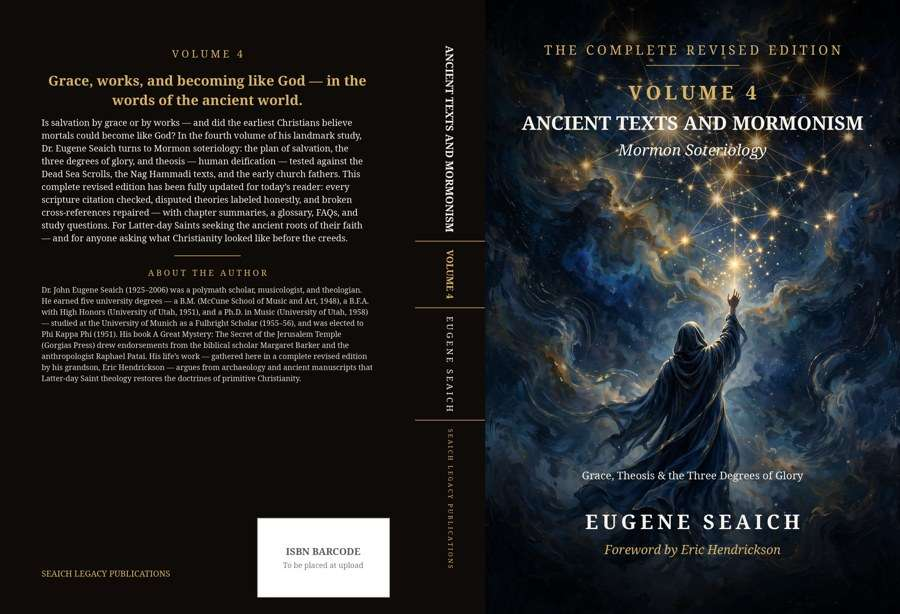

Quick answer
Yes. Many early Christian writers taught theosis, or deification: through Christ, human beings can share in the divine nature. Irenaeus, Clement of Alexandria, and Athanasius wrote that God became human so humans might become divine. The teaching remains central to Eastern Orthodoxy and appears in the Catholic Catechism. Scholars often compare theosis with Latter-day Saint exaltation, although the traditions differ on important points.
Claim Level 3 · Historical ReconstructionWhat "Theosis" Means
Theosis (θέωσις) is Greek for “deification” or “being made god.” Early Christian writers also used the verb theopoieō, “to make divine.” Theosis means that salvation extends beyond forgiveness of sins. Theosis is a transformation in which the believer is drawn into the life of God and becomes, in some real sense, like Him.
The word itself became standard later, through Gregory of Nazianzus in the 4th century. The idea is much older.
Roots in Scripture
- Genesis 1:26: "in our image, after our likeness"
- Psalm 82:6: "I have said, Ye are gods; and all of you are children of the most High." Read the Psalm 82 study →
- John 10:34: Jesus quotes "Ye are gods" answering the blasphemy charge.
- Romans 8:16–17: "we are the children of God: and if children, then heirs; heirs of God, and joint-heirs with Christ"
- 2 Corinthians 3:18: "changed into the same image from glory to glory"
- 2 Peter 1:4: “that by these ye might be partakers of the divine nature” — 2 Peter 1:4 is the key verse for the whole tradition.
- 1 John 3:2: "when he shall appear, we shall be like him; for we shall see him as he is"
- Revelation 3:21: "To him that overcometh will I grant to sit with me in my throne"
What the Church Fathers Taught
Irenaeus of Lyons · c. 180 CE
"The Word of God, our Lord Jesus Christ, who did, through His transcendent love, become what we are, that He might bring us to be even what He is Himself."Against Heresies 5, Preface. He also wrote: "We have not been made gods from the beginning, but at first merely men, then at length gods" (4.38.4).
Clement of Alexandria · c. 195 CE
"The Word of God became man, that thou mayest learn from man how man may become God."Exhortation to the Heathen 1.
Hippolytus of Rome · c. 225 CE
"For you have become God… whatever it is consistent with God to impart, these God has promised to bestow upon you, because you have been deified, and begotten unto immortality."Refutation of All Heresies 10.30. Trans. J. H. MacMahon, Ante-Nicene Fathers, vol. 5.
Athanasius of Alexandria · 4th century
"He was made man that we might be made God."On the Incarnation 54.3. This is the most-quoted statement of theosis.
Gregory of Nazianzus · 4th century
"…that I too might be made God so far as He is made Man."Oration 29.19. Trans. Charles Gordon Browne and James Edward Swallow, Nicene and Post-Nicene Fathers, Second Series, vol. 7.
Augustine of Hippo · c. 400 CE
"It is evident then, that He hath called men gods, that are deified of His Grace, not born of His Substance… If we have been made sons of God, we have also been made gods: but this is the effect of Grace adopting, not of nature generating."Exposition on Psalm 50, §2 (Augustine numbers it Ps. 49). Trans. J. E. Tweed, Nicene and Post-Nicene Fathers, First Series, vol. 8.
Thomas Aquinas · 13th century
"The only-begotten Son of God, wanting us to be partakers of his divinity, assumed our nature, so that he, made man, might make men gods."Opusculum 57, quoted in the Catechism of the Catholic Church §460.
From the second century to the Middle Ages, in both East and West, major Christian thinkers used the language of becoming gods. Claim Level 3
Theosis in the Nag Hammadi Texts
The Nag Hammadi library, discovered in Egypt in 1945, includes early texts that use strong language of transformation into the divine:
"You saw the Spirit, you became spirit. You saw Christ, you became Christ. You saw [the Father, you] became Father."Gospel of Philip, Nag Hammadi Codex II,3 (61.29–35). Trans. Wesley W. Isenberg, The Nag Hammadi Library in English.
"He who will drink from my mouth will become like me. I myself shall become he, and the things that are hidden will be revealed to him."Gospel of Thomas, saying 108. Trans. Thomas O. Lambdin, The Nag Hammadi Library in English.
The Gospel of Philip links divine transformation to ritual, including the mysterious “bridal chamber.” The bridal-chamber theme is central to Eugene Seaich’s work on sacred marriage and the temple. The Gospel of Philip and the Gospel of Thomas come from outside mainstream Christianity, and scholars debate how the two texts relate to mainstream Christianity. Claim Level 3
Theosis in Christianity Today
- Eastern Orthodox: theosis is the goal of the Christian life. Following Gregory Palamas in the 14th century, Orthodox theology distinguishes God's essence from His uncreated energies.
- Roman Catholic: the Catechism §460 teaches that "the Word became flesh to make us 'partakers of the divine nature,'" quoting 2 Peter, Irenaeus, Athanasius and Aquinas. Catholics describe deification as participation through sanctifying grace.
- Protestant: the language is less common but has returned. Finnish Luther scholars find theosis in Luther, Wesleyans compare theosis with Christian perfection, and C. S. Lewis wrote in Mere Christianity that God "said (in the Bible) that we were 'gods' and He is going to make good His words."
Comparison: Four Traditions
| Orthodox | Catholic | Protestant | Latter-day Saint | |
|---|---|---|---|---|
| Term | Theosis | Divinization; participation | Union with Christ; sanctification | Exaltation |
| Key texts | 2 Pet 1:4; Athanasius; Palamas | 2 Pet 1:4; CCC §460; Aquinas | 2 Pet 1:4; Rom 8; 2 Cor 3:18 | Ps 82:6; D&C 76:58; D&C 132:20 |
| How it happens | Grace, sacraments, prayer | Grace, sacraments | Faith, the Holy Spirit | Christ's Atonement, covenants, temple ordinances |
| Share God's essence? | No — energies only | No | No | Humans are of divine kind as God's literal spirit children |
| Creation | From nothing | From nothing | From nothing | Organized from eternal matter; intelligence is eternal |
| End state | Union with God, forever creature | Beatific vision | Glorification | Becoming like Heavenly Father, including eternal family |
Latter-day Saint Exaltation
Latter-day Saint scripture teaches that the faithful "are gods, even the sons of God" (D&C 76:58) and "then shall they be gods, because they have no end" (D&C 132:20). Claim Level 1 In his King Follett sermon of April 1844, Joseph Smith taught that humans may grow to become like God, and Lorenzo Snow summed up the idea in his well-known couplet: "As man now is, God once was; as God now is, man may be."
The Church's Gospel Topics essay "Becoming Like God" cites Irenaeus, Clement, Athanasius and others as early Christian parallels. The Gospel Topics essay also acknowledges that Latter-day Saint teaching differs from patristic teaching, and the essay affirms that Latter-day Saints will always worship God the Father through Jesus Christ. Claim Level 1
What Eugene Seaich Concluded
Eugene Seaich (Ph.D., University of Utah; Fulbright scholar; author of A Great Mystery, Gorgias Press) called the principle behind theosis "Divine Continuity": intelligence is eternal, and there is no unbridgeable gap between God and humanity. In Volume 4 of Ancient Texts and Mormonism, he argues:
- Deification was a genuine and widespread early Christian teaching, not a marginal idea. Claim Level 3
- The early Christian gnosis, meaning saving knowledge conveyed through ritual such as the “bridal chamber,” was a path to divine transformation. Claim Level 2
- Later theology softened deification into "participation by grace." That change came with the adoption of Greek philosophical ideas about God, especially creation from nothing. Claim Level 2
- The Restoration’s teaching of exaltation recovers an older, fuller form of deification. Claim Level 4
"The meaning of this sacred mystery is quite simple: man becomes God, not by his own personal striving, but by spiritual union with that which is already God, just as a 'dead' wire becomes electrified through connection to a source which is already charged."Eugene Seaich, Ancient Texts and Mormonism, Vol. 4: Grace, Works, and Deification, p. 257.
What Skeptics Say
- The Fathers meant participation, not equality. Athanasius and Irenaeus believed God created everything from nothing. For them, deified humans remain creatures forever, sharing God's life by grace, never God's nature. Orthodox and Catholic theologians strongly stress the creator-creature distinction.
- "God was once a man" has no patristic parallel. No early Church Father taught that God the Father was once human. That element of Latter-day Saint teaching is new.
- The Nag Hammadi texts are a different stream. Many scholars see the Gospel of Philip as Valentinian, a movement that mainstream Christians opposed. Its language does not necessarily reflect the beliefs of the wider early church.
- Some scholars do see real common ground. The Catholic Dominican Jordan Vajda (Partakers of the Divine Nature, FARMS, 2002) concluded that Latter-day Saint and patristic teaching share genuine concerns while differing deeply in how the two traditions understand God.
- Resemblance does not equal transmission. Shared language does not by itself prove shared doctrine or a historical connection. “Resemblance does not equal transmission” is the governing rule of the entire series.

Go deeper
Grace, Works, and Deification
Volume 4 traces deification from Psalm 82 through Nag Hammadi and the Church Fathers to the Restoration, in 585 pages with every claim labeled by evidence.
About the bookRelated Questions
Questions
What is theosis?
Theosis (Greek for 'deification' or 'becoming god') is the Christian teaching that human beings are meant to share in the life and nature of God. Theosis is rooted in passages such as 2 Peter 1:4 ('partakers of the divine nature') and was taught by early Church Fathers including Irenaeus, Clement of Alexandria, and Athanasius. It remains central to Eastern Orthodox theology.
Who said "God became man so that man might become god"?
The best-known form comes from Athanasius of Alexandria, On the Incarnation 54.3 (4th century): 'He was made man that we might be made God.' Irenaeus (c. 180 CE) and Clement of Alexandria (c. 195 CE) expressed the same idea earlier, and Augustine and Thomas Aquinas repeated it in the West.
Do Catholics believe in theosis?
Yes. The Catechism of the Catholic Church (paragraph 460) teaches that 'the Word became flesh to make us partakers of the divine nature,' quoting 2 Peter 1:4, Irenaeus, Athanasius, and Thomas Aquinas. Catholic theology usually speaks of participation in God's life through grace.
Do Latter-day Saints believe they will become gods?
Latter-day Saints teach that faithful children of God may, through the Atonement of Jesus Christ, become like their Heavenly Father, a state called exaltation (Doctrine and Covenants 76:58; 132:20). The Church's essay 'Becoming Like God' compares this with early Christian theosis while noting important differences. Latter-day Saints continue to worship God the Father through Jesus Christ.
Is Latter-day Saint exaltation the same as Orthodox theosis?
No, although Latter-day Saint exaltation and Orthodox theosis share language and themes. Orthodox theology holds that humans share in God's uncreated energies by grace but never in God's essence, and that God created the world from nothing. Latter-day Saint theology teaches that humans are literal spirit children of God with eternal intelligence and can grow to become like Him. Scholars on both sides describe real parallels and real differences.
Further Reading
- Russell, Norman. The Doctrine of Deification in the Greek Patristic Tradition. Oxford University Press, 2004.
- Finlan, Stephen, and Vladimir Kharlamov, eds. Theosis: Deification in Christian Theology. Pickwick, 2006.
- Vajda, Jordan. "Partakers of the Divine Nature": A Comparative Analysis of Patristic and Mormon Doctrines of Divinization. FARMS Occasional Papers 3, 2002.
- The Church of Jesus Christ of Latter-day Saints. "Becoming Like God." Gospel Topics Essays.
- Catechism of the Catholic Church, §460.
- Athanasius. On the Incarnation. Irenaeus. Against Heresies, Books 4–5. (Free in the Ante-Nicene and Nicene Fathers series.)
- Givens, Terryl L. Wrestling the Angel: The Foundations of Mormon Thought. Oxford University Press, 2015.
- Seaich, Eugene. Ancient Texts and Mormonism, Vol. 4: Grace, Works, and Deification. Seaich Legacy Publications, 2026.